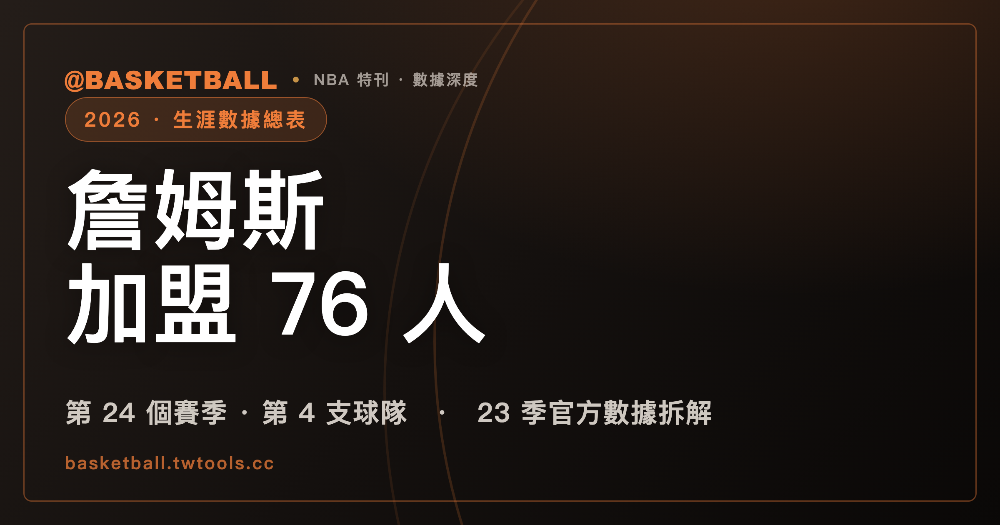

詹姆斯加盟 76 人：41 歲、第 24 個賽季，生涯數據與長壽紀錄全解析
詹姆斯（LeBron James）在 2026 年 7 月 24 日透過個人社群宣布加盟費城 76 人（Philadelphia 76ers），這是他生涯的第四支球隊，也將展開他的第 24 個 NBA 賽季，聯盟史上沒有第二個人打過這麼多季。合約條件方面，NBA 官方報導引述外部報導指出是 2 年 800 萬美元，官方本身標註為「多方報導」；截至本文查證時間，這筆簽約在聯盟官方的休賽季清單上尚未被標為正式宣布。本文整理他 23 個賽季的官方數據、生涯球隊時間軸，以及 76 人這支球隊接下來要面對什麼。

NBA · 生涯數據總表｜第 24 個賽季 · 第 4 支球隊 · 23 季官方數據拆解
2026 年 7 月 24 日，詹姆斯（LeBron James）在個人社群帳號上宣布，他將加盟費城 76 人（Philadelphia 76ers）。NBA 官方網站在美東時間同日 22 時 25 分更新的報導標題寫的是「LeBron James announces he is signing with 76ers」，也就是「宣布他將簽約」，而不是「已完成簽約」。這個時態的差別，在這篇文章裡會反覆出現，因為它決定了哪些事情現在可以當成定局來寫，哪些不行。
本站在 7 月 20 日發布的〈2026 NBA 休賽季異動總表〉裡，詹姆斯是唯一被列為「未定案」的球員。當時的狀態是他已告知洛杉磯湖人（Los Angeles Lakers）不再續留，但沒有宣布下一站。這篇文章補的就是那一格的下文。
全文資料以 NBA 官方網站的公告、官方休賽季異動清單與官方統計專欄為主要來源，取源時間為台北時間 2026 年 7 月 25 日上午 9 時 07 分。台灣媒體的中文譯名以聯合新聞網、ETtoday 運動雲與中央社這三個獨立編輯來源的實際用字為準（自由體育本次刊出的兩篇皆為中央社通稿，計算共識時併入中央社，不另計一家）；沒有兩家以上台灣主流媒體共識的球員，本文保留英文原名，不自行音譯。
一、目前確定與尚未確定的事
把這件事拆開來看，已經有官方依據的部分和還停在報導層的部分，其實不在同一格：
| 項目 | 內容 | 目前狀態 |
|---|---|---|
| 宣布加盟 76 人 | 詹姆斯本人於社群發文宣布 | 已宣布（NBA 官方報導，7 月 24 日） |
| 離開湖人 | 6 月 30 日告知湖人不再回歸 | 已確認（NBA 官方報導） |
| 合約年限 | 2 年 | 官方清單標註為「多方報導」 |
| 合約金額 | 800 萬美元 | 官方報導引述外部報導，非官方數字 |
| 簽約正式生效 | — | 官方清單尚未標為正式宣布 |
這個分野不是咬文嚼字。NBA 官方那份彙整 30 支球隊休賽季動向的清單，對每一筆異動都會標記狀態，用的是兩種不同的括號註記：一種是「officially announced」（正式宣布），另一種是「multiple reports」（多方報導）。在 76 人那一格，Anfernee Simons 的 2 年約、布朗（Jaylen Brown）的交易、Ariel Hukporti 的 1 年約、Dean Wade 的 4 年約，四筆全都標著「正式宣布」；只有詹姆斯這一筆，標的是「多方報導」。
換句話說，在聯盟自己的紀錄上，這件事目前的位階跟同一頁上其他已經生效的簽約並不相同。合約的 800 萬美元這個數字也是同樣的性質：NBA 官方報導的原文寫的是「Per reports, James is set to sign a two-year, $8 million deal」，主詞是「根據報導」；《波士頓環球報》則把來源明確指向 ESPN。台灣這邊，聯合新聞網、ETtoday 運動雲與中央社的報導同樣寫 2 年 800 萬美元，但都是轉述同一組美方報導，不構成獨立的第二個來源。
作為對照，詹姆斯上個賽季的薪資是接近 5,300 萬美元，這個數字出自 NBA 官方報導。若 2 年 800 萬美元的報導最後成立，這會是一次幅度相當大的減薪。他自己在社群貼文裡寫的是：「我不是為了錢，也不是為了家庭。我現在到底還在為什麼而打球？我還想犧牲，還想努力，還想拚，還想競爭、想贏，想再有一次贏得總冠軍的感覺。」
二、生涯球隊時間軸：第四支球隊
詹姆斯 2003 年在克里夫蘭騎士（Cleveland Cavaliers）出道，76 人是他生涯的第四支球隊。以下時間軸依 NBA 官方報導與《波士頓環球報》對各段年資的敘述整理：
| 期間 | 球隊 | 賽季數 | 期間內奪冠 |
|---|---|---|---|
| 2003-04 ～ 2009-10 | 克里夫蘭騎士 | 7 | — |
| 2010-11 ～ 2013-14 | 邁阿密熱火（Miami Heat） | 4 | 2012、2013（生涯前兩冠） |
| 2014-15 ～ 2017-18 | 克里夫蘭騎士 | 4 | 2016 |
| 2018-19 ～ 2025-26 | 洛杉磯湖人 | 8 | 2020 |
| 2026-27 ～ | 費城 76 人 | — | — |
四段年資相加剛好是 23 個賽季，與官方所說的「史上第一位打滿 23 個賽季的球員」對得起來。這 23 季裡他拿下 4 座總冠軍，其中 2016 年那次是替克里夫蘭終結了這座城市長達 56 年的冠軍荒。他在告別文裡對三個地方分別道別：「謝謝洛杉磯。邁阿密我永遠愛你們，而東北俄亥俄永遠是家。」
另外要記一筆的是，他在湖人期間與兒子 Bronny James 成為隊友，依 NBA 官方報導，這是聯盟史上第一次有球員與自己的兒子同隊。
三、第 24 個賽季的意義：最多賽季，但不是最年長
NBA 官方的說法是，詹姆斯是聯盟史上第一位累積 23 個賽季的球員，而 2026-27 賽季會讓這個數字再加一。
這裡有一個很容易被混用的區別：賽季數的紀錄，和年齡的紀錄，是兩件事。
先看賽季數。以下列出幾位以生涯長度著稱的球員作為對照。這是抽樣對照，不是完整排行榜。賽季數在 19 到 21 之間的球員數量不少，本表沒有窮舉：
| 球員 | 賽季數 | 生涯期間 |
|---|---|---|
| 詹姆斯（LeBron James） | 23（2026-27 將成為第 24 季） | 2003-04 ～ 2025-26 |
| 卡特（Vince Carter） | 22 | 1998-99 ～ 2019-20 |
| Robert Parish | 21 | 1976-77 ～ 1996-97 |
| Kevin Willis | 21 | 1984-85 ～ 2006-07 |
| Dirk Nowitzki | 21 | 1998-99 ～ 2018-19 |
| Kevin Garnett | 21 | 1995-96 ～ 2015-16 |
| 賈霸（Kareem Abdul-Jabbar） | 20 | 1969-70 ～ 1988-89 |
| Kobe Bryant | 20 | 1996-97 ～ 2015-16 |
| Udonis Haslem | 20 | 2003-04 ～ 2022-23 |
| Jamal Crawford | 20 | 2000-01 ～ 2019-20 |
| Karl Malone | 19 | 1985-86 ～ 2003-04 |
上表除詹姆斯與賈霸之外的賽季數，是逐一調閱 ESPN 各球員的分季出賽紀錄後計數所得。賈霸的部分要說明一下：ESPN 的分季資料只回溯到 1975-76 賽季，他 1969-70 到 1974-75 的六個賽季不在該資料集內，因此他的 20 季改以 NBA 官方的傳奇球員檔案為準——該頁明確記載他 1989 年離開球場，且當時「沒有任何球員累積過更多賽季」。
再看年齡。詹姆斯現年 41 歲，會在 2026 年 12 月 30 日滿 42 歲，是目前聯盟現役年紀最大的球員。但把時間拉長到整個聯盟史，42 歲離年齡紀錄還有一段距離。以下是 NBA 官方整理的例行賽最年長出賽紀錄：
| 球員 | 最後一場例行賽的年齡 | 日期 |
|---|---|---|
| Nat Hickey | 45 歲 363 天 | 1948 年 1 月 28 日 |
| Kevin Willis | 44 歲 224 天 | 2007 年 4 月 18 日 |
| Robert Parish | 43 歲 232 天 | 1997 年 4 月 19 日 |
| 卡特（Vince Carter） | 43 歲 45 天 | 2020 年 3 月 11 日 |
| Udonis Haslem | 42 歲 304 天 | 2023 年 4 月 9 日 |
Nat Hickey 那一筆是 1948 年的特例，官方註明他生涯只出賽兩場。扣掉他之後的四位，剛好全部都出現在前面那張賽季數對照表裡：他們都打了 20 個以上的賽季，而且最後一場例行賽的年齡都比詹姆斯在 2026-27 賽季會達到的年齡更大。
賈霸這邊要分兩件事講。官方傳奇球員檔案記載他 1989 年、42 歲離開球場，這點成立；而他的最後一戰是當年的總冠軍賽，在官方的季後賽最年長榜上列為 42 歲 58 天。所以「42 歲退休」是對的，但那不是聯盟的年齡天花板。
所以詹姆斯即將展開的這個賽季會改寫的是賽季數，不是年齡。以「打了幾個賽季」這個維度來看，第 24 季在聯盟史上沒有先例。
四、23 個賽季累積出什麼
以下數據全部出自 NBA 官方網站在 7 月 24 日發布的統計專欄，作者為長期為官網撰寫數據分析的 John Schuhmann。這是本文數據部分的主要依據。
先看總量級的部分：
- 除了是聯盟史上得分王之外，他是唯一一位生涯同時累積至少 10,000 個籃板與 6,000 次助攻的球員。
- 23 個賽季，季季都達到「出賽至少 45 場、場均至少 20 分 5 籃板 5 助攻」。次多的是 Stephen Curry，17 個賽季裡做到 12 次。
- 生涯出賽 500 場以上、且場均達到 25 分 7 籃板 7 助攻的球員只有三位：詹姆斯、Luka Dončić，以及名人堂球員 Oscar Robertson。
- 季後賽的得分與抄截都是史上第一，籃板排第 4、助攻第 2、阻攻第 9。
- 23 個賽季裡有 12 季打進分區決賽，10 個賽季帶隊打進總冠軍賽，其中 2011 到 2018 年是連續八年。
技術面則有幾項是拉長到二、三十年才看得出來的：
- 生涯禁區得分 20,370 分。在有禁區得分追蹤資料的 30 年間，比第二名多出 5,024 分。禁區命中率 65.2%，在至少 2,500 次禁區出手的 351 名球員中排第 5。
- 在有逐球資料的 30 年間，他是唯一一位同時累積至少 2,000 次灌籃與 2,000 顆三分球的球員。另一位兩項都達到 1,500 次以上的，只有 Kevin Durant。
- 生涯助攻造成隊友命中三分球 4,090 次，同樣是這 30 年來最多。
- 在第四節或延長賽的最後一分鐘投進、並讓球隊取得領先的進球共 70 顆（含例行賽、附加賽與季後賽），是這 30 年來最多的，比第二名 Kobe Bryant 的 69 顆多一顆。
五、第 23 個賽季發生了什麼：角色明顯縮小
如果只看總量級數據，很容易把上個賽季的詹姆斯想成跟五年前一樣。官方統計專欄裡有一整組數字指向相反的方向：2025-26 賽季是他生涯角色縮減幅度最明顯的一年。
| 項目 | 2025-26 表現 | 在生涯中的位置 |
|---|---|---|
| 場均得分 | 20.9 分 | 生涯最低 |
| 使用率 | 26.2% | 生涯最低 |
| 場均持球時間 | 3.8 分鐘（占上場時間 11.6%） | 13 年追蹤期內最低，且差距明顯 |
| 被助攻出手比例 | 53.9% | 生涯首次過半 |
| 場均切入 | 6.9 次 | 13 年追蹤期內最低 |
| 三分出手占比 | 26.4% | 湖人 8 季中最低 |
| 三分命中率 | 31.7% | 生涯第 4 差，近 10 季最差 |
他上季的場均數據是 20.9 分、6.1 籃板、7.2 助攻。對照生涯場均的 26.8 分、7.5 籃板、7.4 助攻，得分那一欄掉了將近 6 分，助攻則幾乎沒有變。這組數字合起來描述的是一種身分轉換：從發動整場進攻的持球核心，往接球出手與組織串聯的角色移動。
有兩個方向是往上走的。他上季場均快攻得分 5.7 分，在出賽至少 41 場的球員中排全聯盟第一，這已經是他生涯第 8 次拿下這項聯盟第一；他在湖人的 8 個賽季，這項數據季季都在聯盟前五。另外，他上季場均 1.6 次灌籃是近 9 個賽季最多，灌籃占出手比例 11.2%，是生涯第二高。
防守端則出現一個過去沒有出現過的訊號。官方統計專欄指出，上季對手在他防守下的命中率是 48.8%，而這些出手的預期命中率是 47.2%——這是有防守追蹤資料的 13 個賽季以來，第一次出現「對手在他面前投得比預期還好」。
六、76 人是一支什麼樣的球隊
76 人上個賽季例行賽 45 勝 37 敗，季後賽第二輪被最後奪冠的紐約尼克（New York Knicks）橫掃。
這支球隊的難題不在單季成績，而在一條拉得很長的線。NBA 官方統計專欄的整理是：從 2017-18 賽季算起的近 9 個賽季裡，聯盟 30 支球隊中有 19 支至少打進過一次分區決賽，76 人不在這 19 支裡面，即使他們同一段期間的例行賽戰績排全聯盟第 5。官方報導另外提到，這支球隊自 1983 年後未再奪冠，自 2001 年後未曾突破東區季後賽第二輪。
也就是說，這是一支長年在例行賽有競爭力、但在季後賽第二輪反覆卡關的球隊。官方統計專欄對詹姆斯這次加盟的任務描述得很直接：把 76 人帶過東區準決賽這一關。
而詹姆斯本人的說法是：「我相信我能幫助費城 76 人成為一支冠軍球隊，我非常興奮能為一群新的球迷帶來能量，最後一次展開這趟不可思議的旅程。」他同時提到，這是他的「最後一個決定」，而且是在認真考慮過退休之後做出的——他寫道，第 23 個賽季結束時他以為自己已經打完了，「我在最後那場記者會上說我需要看看自己、決定是否還愛這項運動，那是真心話。我依然真心愛著這項運動，而且我還有東西可以付出。」
七、新賽季的陣容與 76 人的休賽季全帳
依 NBA 官方統計專欄的描述，詹姆斯預計會進入一套已經包含馬克西（Tyrese Maxey）、二年級鋒衛 VJ Edgecombe、布朗（Jaylen Brown）與恩比德（Joel Embiid）的先發陣容。
這裡要接回本站 7 月 20 日那篇休賽季總表：布朗與 Paul George 的互換，正是 76 人這個休賽季最大的一筆操作，兩人在 7 月 6 日完成交易。以下是 76 人整個休賽季的官方異動清單：
| 方向 | 球員 | 內容 | 官方標註狀態 |
|---|---|---|---|
| 進 | 布朗（Jaylen Brown） | 自波士頓塞爾提克（Boston Celtics）交易而來 | 正式宣布 |
| 進 | Anfernee Simons | 2 年約 | 正式宣布 |
| 進 | Dean Wade | 4 年約 | 正式宣布 |
| 進 | Ariel Hukporti | 1 年約 | 正式宣布 |
| 進 | 詹姆斯（LeBron James） | 2 年約 | 多方報導 |
| 出 | Paul George | 交易至波士頓塞爾提克 | 正式宣布 |
| 出 | Quentin Grimes | 自由市場加盟洛杉磯湖人 | 正式宣布 |
| 出 | Kelly Oubre Jr. | 自由市場加盟印第安納溜馬（Indiana Pacers） | 正式宣布 |
| 出 | Andre Drummond | 自由市場加盟紐約尼克 | 正式宣布 |
76 人這個休賽季沒有任何一筆續約。整體看下來，他們用 Paul George 換回布朗，再補進 Simons、Wade、Hukporti 三份合約，同時放走三名輪替球員。如果詹姆斯這筆最後正式生效，這支球隊的先發五人會有兩個位置是這個夏天才換上來的。
主導這一連串操作的是 76 人新任籃球事務總裁（President of Basketball Operations）Mike Gansey。NBA 官方報導提到，他與詹姆斯同為俄亥俄州出身、高中時期就是當地的知名籃球員。另外，賓州州長 Josh Shapiro 在詹姆斯宣布當天，把該日定為全州的「LeBron James Day」。
八、接下來要看什麼
以現在的資訊狀態，有三件事還沒到可以下定論的階段。
第一是這筆簽約本身。在 NBA 官方的休賽季清單改標為「正式宣布」之前，2 年 800 萬美元都還是報導層的數字。合約的細部條款——例如是否含球員選項、第二年是否保障，目前沒有任何官方揭露。
第二是「最後一舞」到底指多長。詹姆斯用的字是「最後一個決定」與「最後一次」，加上報導中的 2 年約，很容易被讀成他會打完兩季後退休。但他本人並沒有給出任何退休時間點，官方也沒有。這篇文章不把它寫成已定之事。
第三是這套陣容實際運作起來會長什麼樣。恩比德近年的出賽場次、詹姆斯上季持球時間降到生涯最低、布朗與馬克西各自需要多少球權，這幾件事要等 2026-27 賽季開打之後才有數據可談。本站會在開季後接上每日更新。
常見問題
詹姆斯確定加盟 76 人了嗎？
他本人已於 2026 年 7 月 24 日在社群宣布加盟，NBA 官方網站也以此發布報導。但在 NBA 官方的休賽季異動清單上，這筆目前標註的是「多方報導」，而不是同一頁其他交易所用的「正式宣布」。也就是說，宣布已經發生，官方層級的正式生效在本文查證時間點尚未出現。
他跟 76 人簽了多少錢？
依 NBA 官方報導引述的外部報導，以及《波士頓環球報》引述 ESPN 的說法，是 2 年 800 萬美元。這個數字目前沒有官方版本。作為對照，他 2025-26 賽季的薪資接近 5,300 萬美元。
這是他的第幾個賽季？他打破了什麼紀錄？
2026-27 將是他的第 24 個 NBA 賽季。依 NBA 官方說法，他是聯盟史上第一位累積 23 個賽季的球員，因此第 24 季同樣沒有前例。要注意的是，這是「賽季數」的紀錄，不是「年齡」的紀錄。依 NBA 官方整理，例行賽最年長出賽紀錄是 1948 年 Nat Hickey 的 45 歲 363 天；即使排除生涯只出賽兩場的 Hickey，Kevin Willis（44 歲 224 天）、Robert Parish（43 歲 232 天）、卡特（Vince Carter，43 歲 45 天）與 Udonis Haslem（42 歲 304 天）也都比詹姆斯在 2026-27 賽季會達到的年齡更大。詹姆斯要到 2026 年 12 月 30 日才滿 42 歲；賈霸（Kareem Abdul-Jabbar）1989 年離開球場時是 42 歲，他的最後一戰在總冠軍賽，官方季後賽最年長榜列為 42 歲 58 天。
76 人現在的先發陣容是誰？
依 NBA 官方統計專欄的描述，詹姆斯預計會加入已包含馬克西（Tyrese Maxey）、VJ Edgecombe、布朗（Jaylen Brown）與恩比德（Joel Embiid）的先發五人組。76 人這個休賽季另外簽下 Anfernee Simons、Dean Wade 與 Ariel Hukporti，並送走 Paul George、Quentin Grimes、Kelly Oubre Jr. 與 Andre Drummond。
詹姆斯上個賽季的表現如何？
場均 20.9 分、6.1 籃板、7.2 助攻。得分是他生涯單季最低，使用率 26.2% 同樣是生涯最低，被隊友助攻的出手比例 53.9% 則是生涯第一次超過一半。不過他的場均快攻得分 5.7 分仍是全聯盟第一，這是他生涯第 8 次在這項數據上居首。
76 人為什麼被認為需要詹姆斯？
這支球隊自 1983 年後未再奪冠，自 2001 年後未曾突破東區季後賽第二輪。依 NBA 官方統計專欄的整理，2017-18 賽季以來的近 9 個賽季，聯盟有 19 支球隊至少打進過一次分區決賽，76 人不在其中，即使他們同期例行賽戰績排全聯盟第 5。上季他們 45 勝 37 敗，季後賽第二輪被紐約尼克橫掃。
資料來源：NBA 官方網站報導〈LeBron James announces he is signing with 76ers〉（2026 年 7 月 24 日更新）、NBA 官方休賽季異動清單、NBA 官方統計專欄〈LeBron James stat sheet: 20 numbers to know after move to Philly〉（John Schuhmann，2026 年 7 月 24 日）、NBA 官方傳奇球員檔案（Kareem Abdul-Jabbar）、NBA 官方〈Oldest players to play in an NBA game〉、費城 76 人官方球團人物頁（Mike Gansey）、《波士頓環球報》2026 年 7 月 24 日報導；生涯賽季數對照另參考 ESPN 各球員分季出賽紀錄。取源時間為台北時間 2026 年 7 月 25 日上午 9 時 07 分。
本站為非官方球迷網站，與 NBA、費城 76 人或任何球團無隸屬關係。休賽季資訊會隨時間變動，文中標為「多方報導」的項目請以聯盟與球團後續的正式公告為準。